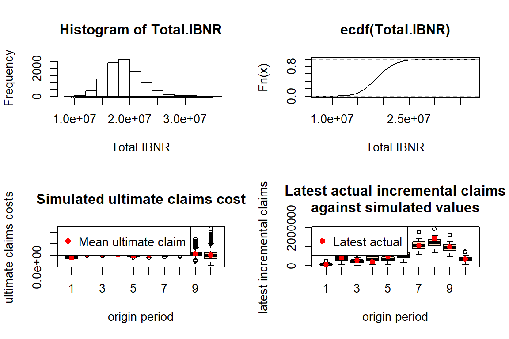

6 Claims reserving
6.1 Goals
You’ll focus on reserving analytics with run-off triangles, including the following steps:
- importing a run-off triangle
- visualizing the data in the triangle
- basic chain-ladder calculations: the Mack approach
- setting up a bootstrap analysis to simulate from the predictive distribution of the outstanding loss amount while incorporating parameter and process uncertainty.
6.2 Import a run-off triangle
6.2.1 Using scan
You can load a run-off triangle in many different ways. Here is a first strategy, using the scan() function in R.
Xij <- scan(n=55)
357848 766940 610542 482940 527326 574398 146342 139950 227229 67948
352118 884021 933894 1183289 445745 320996 527804 266172 425046
290507 1001799 926219 1016654 750816 146923 495992 280405
310608 1108250 776189 1562400 272482 352053 206286
443160 693190 991983 769488 504851 470639
396132 937085 847498 805037 705960
440832 847631 1131398 1063269
359480 1061648 1443370
376686 986608
344014Exercise:
- verify the structure of object
Xij. What happened?
You will now reshape the flat vector Xij into a data frame that can be used for claims reserving with GLMs.
n <- length(Xij)
TT <- trunc(sqrt(2*n))
# row.nrs
i <- rep(1:TT, TT:1)
# col.nrs
j <- sequence(TT:1)
# calendar.nrs
c <- i+j-1
# as.factor
i <- as.factor(i)
j <- as.factor(j)
c <- as.factor(c)
# combine into a data frame
my_triangle_data <- data.frame(Xij, i, j, c)Exercise:
- verify the structure of the resulting data frame
- inspect the first 10 rows using
head.
You now prepare some first visual inspections of the data stored in my_triangle_data.
par(mfrow = c(2, 2))
boxplot(Xij ~ i, col = "grey", main = "Boxplot of payments vs AY")
boxplot(Xij ~ j, col = "grey", main = "Boxplot of payments vs DY")
boxplot(Xij ~ c, col = "grey", main = "Boxplot of payments vs CY")
par(mfrow = c(1, 1))6.2.2 Using the chainladder package
The ChainLadder package is a well-developed and highly useful package for claims reserving in R. Among others the package brings functions covering:
- Mack chain-ladder, Munich chain-ladder and bootstrap models
- General multivariate chain ladder-models
- Loss development factor fitting and Cape Cod models
- Generalized linear models
- One year claims development result functions
- Utility functions to:
- convert tables into triangles and triangles into tables
- convert cumulative into incremental and incremental into cumulative triangles
- visualise triangles.
You’ll now load the triangle introduced above with the ChainLadder package. Here is how this works.
path <- file.path("C:/Users/u0043788/Dropbox/Risk modelling course Ljubljana/Bookdown/data")
path.triangle <- file.path(path, "TaylorAshe.txt")
my_triangle_data_set <- read.table(path.triangle, header = TRUE, sep="\t")Using the as.triangle function from the ChainLadder package you can reshape the data frame into a ‘triangle’.
#install.packages("ChainLadder")
library(ChainLadder)
# prepare triangle
my_triangle <- as.triangle(my_triangle_data_set, origin = "NumAY", dev = "NumDY", value = "Paym")
my_triangle NumDY
NumAY 1 2 3 4 5 6 7 8 9 10
1 357848 766940 610542 482940 527326 574398 146342 139950 227229 67948
2 352118 884021 933894 1183289 445745 320996 527804 266172 425046 NA
3 290507 1001799 926219 1016654 750816 146923 495992 280405 NA NA
4 310608 1108250 776189 1562400 272482 352053 206286 NA NA NA
5 443160 693190 991983 769488 504851 470639 NA NA NA NA
6 396132 937085 847498 805037 705960 NA NA NA NA NA
7 440832 847631 1131398 1063269 NA NA NA NA NA NA
8 359480 1061648 1443370 NA NA NA NA NA NA NA
9 376686 986608 NA NA NA NA NA NA NA NA
10 344014 NA NA NA NA NA NA NA NA NAExercise:
- interpret the arguments of the function
as.triangle - what is the structure of the R object
my_triangle?
Here is an illustration of some useful functions from the package. Can you figure out what they do?
my_triangle_cum <- incr2cum(my_triangle)
my_triangle_cum NumDY
NumAY 1 2 3 4 5 6 7 8 9
1 357848 1124788 1735330 2218270 2745596 3319994 3466336 3606286 3833515
2 352118 1236139 2170033 3353322 3799067 4120063 4647867 4914039 5339085
3 290507 1292306 2218525 3235179 3985995 4132918 4628910 4909315 NA
4 310608 1418858 2195047 3757447 4029929 4381982 4588268 NA NA
5 443160 1136350 2128333 2897821 3402672 3873311 NA NA NA
6 396132 1333217 2180715 2985752 3691712 NA NA NA NA
7 440832 1288463 2419861 3483130 NA NA NA NA NA
8 359480 1421128 2864498 NA NA NA NA NA NA
9 376686 1363294 NA NA NA NA NA NA NA
10 344014 NA NA NA NA NA NA NA NA
NumDY
NumAY 10
1 3901463
2 NA
3 NA
4 NA
5 NA
6 NA
7 NA
8 NA
9 NA
10 NAplot(my_triangle)plot(my_triangle_cum)plot(my_triangle, lattice = TRUE)plot(my_triangle_cum, lattice = TRUE)getLatestCumulative(my_triangle_cum) 1 2 3 4 5 6 7 8 9 10
3901463 5339085 4909315 4588268 3873311 3691712 3483130 2864498 1363294 344014
attr(,"latestcol")
1 2 3 4 5 6 7 8 9 10
10 9 8 7 6 5 4 3 2 1
attr(,"rowsname")
[1] "NumAY"
attr(,"colnames")
[1] "10" "9" "8" "7" "6" "5" "4" "3" "2" "1"
attr(,"colsname")
[1] "NumDY"6.3 Mack’s Chain-Ladder calculations
The ChainLadder package can easily perform Mack’s calculations (see the lecture notes by Katrien for more details).
M <- MackChainLadder(my_triangle_cum, est.sigma = "Mack")
MMackChainLadder(Triangle = my_triangle_cum, est.sigma = "Mack")
Latest Dev.To.Date Ultimate IBNR Mack.S.E CV(IBNR)
1 3,901,463 1.0000 3,901,463 0 0 NaN
2 5,339,085 0.9826 5,433,719 94,634 75,535 0.798
3 4,909,315 0.9127 5,378,826 469,511 121,699 0.259
4 4,588,268 0.8661 5,297,906 709,638 133,549 0.188
5 3,873,311 0.7973 4,858,200 984,889 261,406 0.265
6 3,691,712 0.7223 5,111,171 1,419,459 411,010 0.290
7 3,483,130 0.6153 5,660,771 2,177,641 558,317 0.256
8 2,864,498 0.4222 6,784,799 3,920,301 875,328 0.223
9 1,363,294 0.2416 5,642,266 4,278,972 971,258 0.227
10 344,014 0.0692 4,969,825 4,625,811 1,363,155 0.295
Totals
Latest: 34,358,090.00
Dev: 0.65
Ultimate: 53,038,945.61
IBNR: 18,680,855.61
Mack.S.E 2,447,094.86
CV(IBNR): 0.13# get development factors
M$f [1] 3.491 1.747 1.457 1.174 1.104 1.086 1.054 1.077 1.018 1.000# get the estimates for \sigma^2
M$sigma^2[1] 160280.3 37736.9 41965.2 15182.9 13731.3 8185.8 446.6 1147.4
[9] 446.6# get the full triangle
M$FullTriangle dev
origin 1 2 3 4 5 6 7 8 9
1 357848 1124788 1735330 2218270 2745596 3319994 3466336 3606286 3833515
2 352118 1236139 2170033 3353322 3799067 4120063 4647867 4914039 5339085
3 290507 1292306 2218525 3235179 3985995 4132918 4628910 4909315 5285148
4 310608 1418858 2195047 3757447 4029929 4381982 4588268 4835458 5205637
5 443160 1136350 2128333 2897821 3402672 3873311 4207459 4434133 4773589
6 396132 1333217 2180715 2985752 3691712 4074999 4426546 4665023 5022155
7 440832 1288463 2419861 3483130 4088678 4513179 4902528 5166649 5562182
8 359480 1421128 2864498 4174756 4900545 5409337 5875997 6192562 6666635
9 376686 1363294 2382128 3471744 4075313 4498426 4886502 5149760 5544000
10 344014 1200818 2098228 3057984 3589620 3962307 4304132 4536015 4883270
dev
origin 10
1 3901463
2 5433719
3 5378826
4 5297906
5 4858200
6 5111171
7 5660771
8 6784799
9 5642266
10 4969825# get Mack SE
M$Mack.S.E dev
origin 1 2 3 4 5 6 7 8 9 10
1 0 0 0 0 0 0 0 0 0 0
2 0 0 0 0 0 0 0 0 0 75535
3 0 0 0 0 0 0 0 0 94225 121699
4 0 0 0 0 0 0 0 52792 109210 133549
5 0 0 0 0 0 0 198502 215088 247694 261406
6 0 0 0 0 0 247204 337617 359530 397610 411010
7 0 0 0 0 250737 381475 468091 496372 543209 558317
8 0 0 0 378275 524309 648532 745376 787969 855493 875328
9 0 0 241429 489488 626722 739750 832421 878987 951274 971258
10 0 246656 486186 776148 940318 1066053 1175373 1239733 1337626 1363155# split parameter and process risk
M$Mack.ProcessRisk dev
origin 1 2 3 4 5 6 7 8 9 10
1 0 0 0 0 0 0 0 0 0 0
2 0 0 0 0 0 0 0 0 0 48832
3 0 0 0 0 0 0 0 0 75052 90524
4 0 0 0 0 0 0 0 45268 89011 102622
5 0 0 0 0 0 0 178062 192597 219267 227880
6 0 0 0 0 0 225149 305242 324745 357179 366582
7 0 0 0 0 229965 347244 423348 448603 489045 500202
8 0 0 0 346712 478565 588507 673019 711125 770192 785741
9 0 0 226818 457429 583978 686644 770169 813005 878614 895570
10 0 234816 462237 736128 890565 1007785 1109441 1170034 1261670 1284882M$Mack.ParameterRisk dev
origin 1 2 3 4 5 6 7 8 9 10
1 0 0 0 0 0 0 0 0 0 0
2 0 0 0 0 0 0 0 0 0 57628
3 0 0 0 0 0 0 0 0 56970 81338
4 0 0 0 0 0 0 0 27163 63275 85464
5 0 0 0 0 0 0 87733 95756 115215 128078
6 0 0 0 0 0 102068 144266 154280 174690 185867
7 0 0 0 0 99925 157940 199712 212463 236456 248023
8 0 0 0 151271 214185 272494 320359 339405 372388 385759
9 0 0 82715 174234 227486 275226 315855 334127 364636 375893
10 0 75503 150710 246013 301814 347618 388126 409829 444333 455270sqrt(M$Mack.ProcessRisk^2+M$Mack.ParameterRisk^2) dev
origin 1 2 3 4 5 6 7 8 9 10
1 0 0 0 0 0 0 0 0 0 0
2 0 0 0 0 0 0 0 0 0 75535
3 0 0 0 0 0 0 0 0 94225 121699
4 0 0 0 0 0 0 0 52792 109210 133549
5 0 0 0 0 0 0 198502 215088 247694 261406
6 0 0 0 0 0 247204 337617 359530 397610 411010
7 0 0 0 0 250737 381475 468091 496372 543209 558317
8 0 0 0 378275 524309 648532 745376 787969 855493 875328
9 0 0 241429 489488 626722 739750 832421 878987 951274 971258
10 0 246656 486186 776148 940318 1066053 1175373 1239733 1337626 1363155Again, the package can nicely visualize the results.
plot(M)
plot(M,lattice=TRUE)Exercise:
- interpret the plots. What do you see?
6.4 GLM analysis of a run-off triangle
Next to Mack’s chain ladder calculation, you can also work with the data frame my_triangle_data and build a (overdispersed) Poisson GLM for these data.
str(my_triangle_data)'data.frame': 55 obs. of 4 variables:
$ Xij: num 357848 766940 610542 482940 527326 ...
$ i : Factor w/ 10 levels "1","2","3","4",..: 1 1 1 1 1 1 1 1 1 1 ...
$ j : Factor w/ 10 levels "1","2","3","4",..: 1 2 3 4 5 6 7 8 9 10 ...
$ c : Factor w/ 10 levels "1","2","3","4",..: 1 2 3 4 5 6 7 8 9 10 ...# Poisson GLM of Xij versus i+j
poi_glm <- glm(Xij ~ i + j, poisson(link=log), data = my_triangle_data)
summary(poi_glm)
Call:
glm(formula = Xij ~ i + j, family = poisson(link = log), data = my_triangle_data)
Deviance Residuals:
Min 1Q Median 3Q Max
-464.9 -123.7 -21.7 116.2 494.3
Coefficients:
Estimate Std. Error z value Pr(>|z|)
(Intercept) 12.506405 0.000754 16587.37 < 2e-16 ***
i2 0.331272 0.000669 494.85 < 2e-16 ***
i3 0.321119 0.000688 466.96 < 2e-16 ***
i4 0.305960 0.000701 436.57 < 2e-16 ***
i5 0.219316 0.000732 299.46 < 2e-16 ***
i6 0.270077 0.000745 362.76 < 2e-16 ***
i7 0.372208 0.000761 489.34 < 2e-16 ***
i8 0.553333 0.000813 680.38 < 2e-16 ***
i9 0.368934 0.001043 353.77 < 2e-16 ***
i10 0.242033 0.001864 129.83 < 2e-16 ***
j2 0.912526 0.000649 1406.04 < 2e-16 ***
j3 0.958831 0.000665 1441.37 < 2e-16 ***
j4 1.025997 0.000684 1499.93 < 2e-16 ***
j5 0.435276 0.000802 542.81 < 2e-16 ***
j6 0.080057 0.000936 85.49 < 2e-16 ***
j7 -0.006381 0.001039 -6.14 8.1e-10 ***
j8 -0.394452 0.001353 -291.56 < 2e-16 ***
j9 0.009378 0.001396 6.72 1.9e-11 ***
j10 -1.379907 0.003910 -352.95 < 2e-16 ***
---
Signif. codes: 0 '***' 0.001 '**' 0.01 '*' 0.05 '.' 0.1 ' ' 1
(Dispersion parameter for poisson family taken to be 1)
Null deviance: 10699464 on 54 degrees of freedom
Residual deviance: 1903014 on 36 degrees of freedom
AIC: 1903877
Number of Fisher Scoring iterations: 4# get coefficients of this regression model
coef(poi_glm)(Intercept) i2 i3 i4 i5 i6
12.506405 0.331272 0.321119 0.305960 0.219316 0.270077
i7 i8 i9 i10 j2 j3
0.372208 0.553333 0.368934 0.242033 0.912526 0.958831
j4 j5 j6 j7 j8 j9
1.025997 0.435276 0.080057 -0.006381 -0.394452 0.009378
j10
-1.379907 Exercise:
- write down the full model specification of this GLM.
Using the coefficients stored in poi_glm you want to extract fitted values for upper and lower triangle.
# apply inverse link function
coefs <- exp(as.numeric(coef(poi_glm)))
alpha <- c(1, coefs[2:TT])*coefs[1]
alpha [1] 270061 376125 372325 366724 336287 353798 391842 469648 390561 344014length(alpha)[1] 10beta <- c(1, coefs[(TT+1):(2*TT-1)])
beta [1] 1.0000 2.4906 2.6086 2.7899 1.5454 1.0833 0.9936 0.6740 1.0094 0.2516length(beta)[1] 10# fitted values, original scale
orig_fits <- alpha %*% t(beta)
dim(orig_fits)[1] 10 10str(orig_fits) num [1:10, 1:10] 270061 376125 372325 366724 336287 ...orig_fits [,1] [,2] [,3] [,4] [,5] [,6] [,7] [,8] [,9] [,10]
[1,] 270061 672617 704494 753438 417350 292571 268344 182035 272606 67948
[2,] 376125 936779 981176 1049342 581260 407474 373732 253527 379669 94634
[3,] 372325 927316 971264 1038741 575388 403358 369957 250966 375833 93678
[4,] 366724 913365 956652 1023114 566731 397290 364391 247190 370179 92268
[5,] 336287 837559 877254 938200 519695 364316 334148 226674 339456 84611
[6,] 353798 881172 922933 987053 546756 383287 351548 238477 357132 89016
[7,] 391842 975923 1022175 1093189 605548 424501 389349 264121 395534 98588
[8,] 469648 1169707 1225143 1310258 725788 508792 466660 316566 474073 118164
[9,] 390561 972733 1018834 1089616 603569 423113 388076 263257 394241 98266
[10,] 344014 856804 897410 959756 531636 372687 341826 231882 347255 86555Of course, you can also extract fitted.values from the GLM stored in poi_glm. What is the difference with our own coded approach?
fitted.values(poi_glm) 1 2 3 4 5 6 7 8 9 10
270061 672617 704494 753438 417350 292571 268344 182035 272606 67948
11 12 13 14 15 16 17 18 19 20
376125 936779 981176 1049342 581260 407474 373732 253527 379669 372325
21 22 23 24 25 26 27 28 29 30
927316 971264 1038741 575388 403358 369957 250966 366724 913365 956652
31 32 33 34 35 36 37 38 39 40
1023114 566731 397290 364391 336287 837559 877254 938200 519695 364316
41 42 43 44 45 46 47 48 49 50
353798 881172 922933 987053 546756 391842 975923 1022175 1093189 469648
51 52 53 54 55
1169707 1225143 390561 972733 344014 # extract future
future <- row(orig_fits) + col(orig_fits) - 1 > TT
future [,1] [,2] [,3] [,4] [,5] [,6] [,7] [,8] [,9] [,10]
[1,] FALSE FALSE FALSE FALSE FALSE FALSE FALSE FALSE FALSE FALSE
[2,] FALSE FALSE FALSE FALSE FALSE FALSE FALSE FALSE FALSE TRUE
[3,] FALSE FALSE FALSE FALSE FALSE FALSE FALSE FALSE TRUE TRUE
[4,] FALSE FALSE FALSE FALSE FALSE FALSE FALSE TRUE TRUE TRUE
[5,] FALSE FALSE FALSE FALSE FALSE FALSE TRUE TRUE TRUE TRUE
[6,] FALSE FALSE FALSE FALSE FALSE TRUE TRUE TRUE TRUE TRUE
[7,] FALSE FALSE FALSE FALSE TRUE TRUE TRUE TRUE TRUE TRUE
[8,] FALSE FALSE FALSE TRUE TRUE TRUE TRUE TRUE TRUE TRUE
[9,] FALSE FALSE TRUE TRUE TRUE TRUE TRUE TRUE TRUE TRUE
[10,] FALSE TRUE TRUE TRUE TRUE TRUE TRUE TRUE TRUE TRUETo conclude, you calculate the point estimates of the reserves (in total and per row) as obtained from the poi_glm fit.
# compare reserves with CL reserves
orig_reserve_tot <- sum(orig_fits[future])
orig_reserve_row <- numeric(TT-1)
for(i in 2:TT){
orig_reserve_row[i-1] <- sum(orig_fits[i, (TT-i+2):TT])
}
point_est_glm <- data.frame(2:TT, orig_reserve_row)
names(point_est_glm) <- c("row", "reserve")
orig_reserve_tot[1] 18680856point_est_glm row reserve
1 2 94634
2 3 469511
3 4 709638
4 5 984889
5 6 1419459
6 7 2177641
7 8 3920301
8 9 4278972
9 10 4625811Exercise:
- compare the point estimates with the results stored in object
M. What do you conclude? - now redo the analysis, use
family = quasipoissonto do overdispersed Poisson instead of regular Poisson regression.
6.5 Bootstrap analysis
Starting from the results of an overdispersed Poisson GLM you can now code a bootstrap analysis to simulate from the predictive distribution of the outstanding reserve. Here is the preparatory work.
# OD Poisson GLM of Xij versus i+j
poi_glm_od <- glm(Xij ~ i + j, quasipoisson(link=log), data = my_triangle_data)
summary(poi_glm_od)
Call:
glm(formula = Xij ~ i + j, family = quasipoisson(link = log),
data = my_triangle_data)
Deviance Residuals:
Min 1Q Median 3Q Max
-464.9 -123.7 -21.7 116.2 494.3
Coefficients:
Estimate Std. Error t value Pr(>|t|)
(Intercept) 12.50640 0.17292 72.32 < 2e-16 ***
i2 0.33127 0.15354 2.16 0.0377 *
i3 0.32112 0.15772 2.04 0.0492 *
i4 0.30596 0.16074 1.90 0.0650 .
i5 0.21932 0.16797 1.31 0.1999
i6 0.27008 0.17076 1.58 0.1225
i7 0.37221 0.17445 2.13 0.0398 *
i8 0.55333 0.18653 2.97 0.0053 **
i9 0.36893 0.23918 1.54 0.1317
i10 0.24203 0.42756 0.57 0.5749
j2 0.91253 0.14885 6.13 4.7e-07 ***
j3 0.95883 0.15257 6.28 2.9e-07 ***
j4 1.02600 0.15688 6.54 1.3e-07 ***
j5 0.43528 0.18391 2.37 0.0234 *
j6 0.08006 0.21477 0.37 0.7115
j7 -0.00638 0.23829 -0.03 0.9788
j8 -0.39445 0.31029 -1.27 0.2118
j9 0.00938 0.32025 0.03 0.9768
j10 -1.37991 0.89669 -1.54 0.1326
---
Signif. codes: 0 '***' 0.001 '**' 0.01 '*' 0.05 '.' 0.1 ' ' 1
(Dispersion parameter for quasipoisson family taken to be 52602)
Null deviance: 10699464 on 54 degrees of freedom
Residual deviance: 1903014 on 36 degrees of freedom
AIC: NA
Number of Fisher Scoring iterations: 4# extract Pearson residuals
Prs.resid <- (my_triangle_data$Xij - fitted(poi_glm_od))/sqrt(fitted(poi_glm_od))
# get estimate dispersion parameter
n[1] 55p <- 2*TT-1
p[1] 19phi.P <- sum(Prs.resid^2)/(n-p)
phi.P[1] 52601# adjust the residuals for bias in the same way as scale parameter
Adj.Prs.resid <- Prs.resid*sqrt(n/(n-p))And here starts the bootstrap loop, see Katrien’s lecture notes for explanation and schematic overview.
# initialize the random number generator
set.seed(6345789)
# i and j as factor variables
i <- rep(1:TT, TT:1); i <- as.factor(i)
j <- sequence(TT:1); j <- as.factor(j)
# run the bootstrap loop many times, eg 10000 times
nBoot <- 10000
payments <- numeric(nBoot)
for(boots in 1:nBoot){ ## start of the bootstrap loop
# Step 1: resample from the adjusted residuals, with replacement
Ps.Xij <- sample(Adj.Prs.resid, n, replace=TRUE)
# Step 2: using this set of residuals and the estimated values of \hat{\mu_{ij}}
# create a new suitable pseudo-history
Ps.Xij <- Ps.Xij*sqrt(fitted(poi_glm_od))+fitted(poi_glm_od)
Ps.Xij <- pmax(Ps.Xij, 0)
# Step 3: from this history, estimate \alpha_i, beta_j
Ps.CL <- glm(Ps.Xij ~ i + j, quasipoisson)
coefs <- exp(as.numeric(coef(Ps.CL)))
Ps.alpha <- c(1, coefs[2:TT])*coefs[1]
Ps.beta <- c(1, coefs[(TT+1):(2*TT-1)])
# Step 4: compute fitted values, use sum of future part as an estimate of the reserve
Ps.fits <- Ps.alpha%*%t(Ps.beta)
Ps.reserve <- sum(Ps.fits[future])
# Step 5:
Ps.totpayments <- phi.P*rpois(1, Ps.reserve/phi.P)
# Step 6:
payments[boots] <- Ps.totpayments
}
min(payments)[1] 7416792max(payments)[1] 31981628You extract useful summaries from the results stored in payments as follows.
quantile(payments, c(0.5, 0.75, 0.9, 0.95, 0.99), na.rm = TRUE) 50% 75% 90% 95% 99%
18673483 20672335 22671187 23986221 26826694 mean(payments)[1] 18848278sd(payments)[1] 2968997And plots
d <- data.frame(payments)
library(ggplot2)
ggplot(data=d, aes(payments)) +
geom_histogram(col = "black", fill = "blue", alpha = 0.2) + theme_bw() +
labs(title = "Histogram for Bootstrap Reserves", x="Reserves", y="Count") `stat_bin()` using `bins = 30`. Pick better value with `binwidth`.
The ChainLadder package also has useful functions to set up bootstrap simulations.
set.seed(1)
B <- BootChainLadder(GenIns, R = 10000, process.distr = "od.pois")
BBootChainLadder(Triangle = GenIns, R = 10000, process.distr = "od.pois")
Latest Mean Ultimate Mean IBNR IBNR.S.E IBNR 75% IBNR 95%
1 3,901,463 3,901,463 0 0 0 0
2 5,339,085 5,435,471 96,386 113,603 149,138 312,621
3 4,909,315 5,380,702 471,387 217,453 598,149 864,988
4 4,588,268 5,305,145 716,877 261,068 876,808 1,179,647
5 3,873,311 4,864,352 991,041 307,441 1,179,230 1,542,424
6 3,691,712 5,126,756 1,435,044 380,790 1,673,438 2,107,963
7 3,483,130 5,673,303 2,190,173 497,466 2,509,815 3,058,627
8 2,864,498 6,815,226 3,950,728 796,044 4,445,624 5,355,080
9 1,363,294 5,684,146 4,320,852 1,064,740 4,952,187 6,209,475
10 344,014 5,043,687 4,699,673 2,018,504 5,899,153 8,156,800
Totals
Latest: 34,358,090
Mean Ultimate: 53,230,252
Mean IBNR: 18,872,162
IBNR.S.E 3,001,662
Total IBNR 75%: 20,761,090
Total IBNR 95%: 24,064,106plot(B)
# some attributes o
B$Triangle dev
origin 1 2 3 4 5 6 7 8 9
1 357848 1124788 1735330 2218270 2745596 3319994 3466336 3606286 3833515
2 352118 1236139 2170033 3353322 3799067 4120063 4647867 4914039 5339085
3 290507 1292306 2218525 3235179 3985995 4132918 4628910 4909315 NA
4 310608 1418858 2195047 3757447 4029929 4381982 4588268 NA NA
5 443160 1136350 2128333 2897821 3402672 3873311 NA NA NA
6 396132 1333217 2180715 2985752 3691712 NA NA NA NA
7 440832 1288463 2419861 3483130 NA NA NA NA NA
8 359480 1421128 2864498 NA NA NA NA NA NA
9 376686 1363294 NA NA NA NA NA NA NA
10 344014 NA NA NA NA NA NA NA NA
dev
origin 10
1 3901463
2 NA
3 NA
4 NA
5 NA
6 NA
7 NA
8 NA
9 NA
10 NAB$f [1] 3.491 1.747 1.457 1.174 1.104 1.086 1.054 1.077 1.018 1.000B$IBNR.Totals[1:10] [1] 21398909 17870368 17597508 18428981 19512320 19606687 15880725 22244763
[9] 19325943 17354310